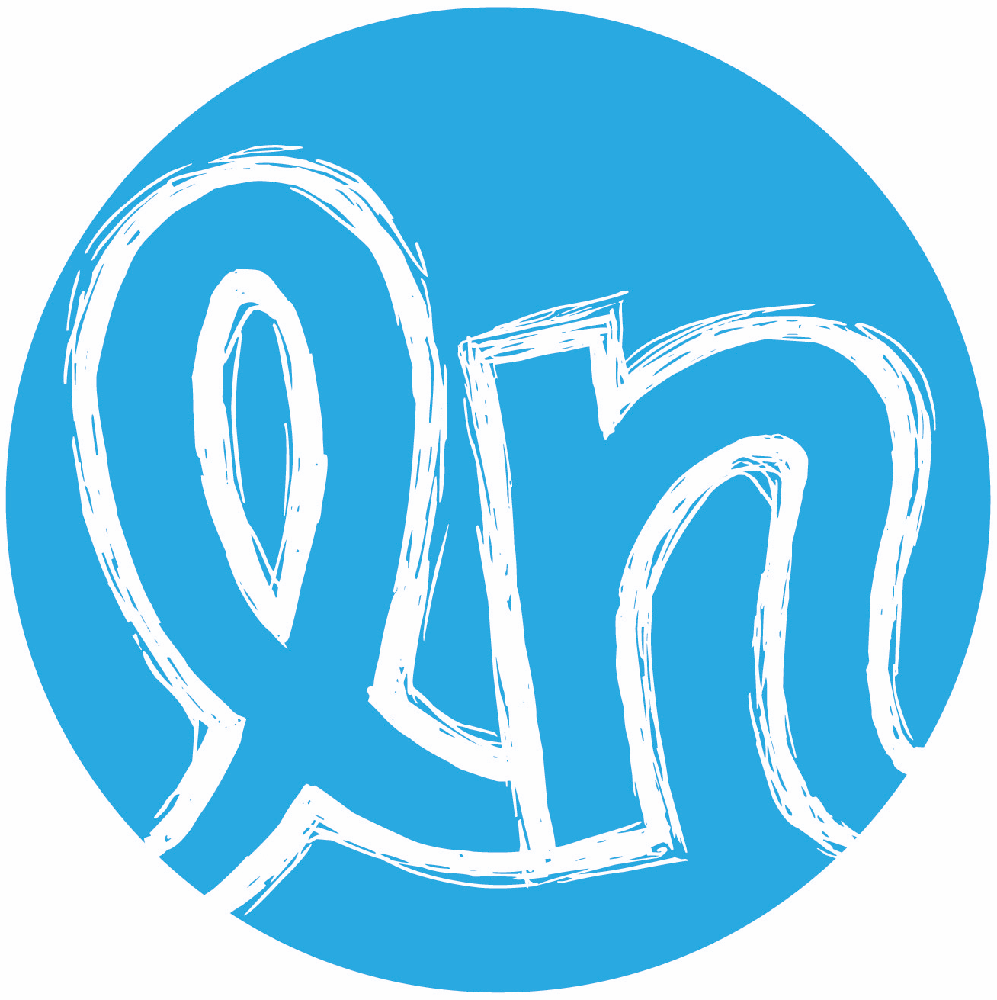

Lindsey Needham
Idealist at heart. Support operations by trade.
About
For over a decade, I've been building and scaling support operations. Today, I manage a team of product support specialists at Stripe, overseeing the entire support journey across payments and money management products.
My early career was rooted in nonprofits, improving access to the vote and electoral systems for all communities. That same principle guides my approach to support operations: removing friction, enabling expertise, and ensuring people have what they need to succeed.